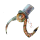

<mat-toolbar class="navigation-menu">
  <button (click)="drawer.toggle()"
          [class.navigation-menu__button_opened]="sidenav_opened"
          aria-label="Menu fab"
          class="navigation-menu__button"
          mat-button>
    <mat-icon>menu</mat-icon>
  </button>
  <!--      <competition-logo *ngIf="drawer.opened" [style.&#45;&#45;height]="'56px'" class="menu__logo"></competition-logo>-->
  
  <div [class.navigation-menu__title_opened]="true" class="navigation-menu__title">
    <span [class.navigation-menu__title-main_opened]="true" class="navigation-menu__title-main">IBIS </span>
    <span [class.navigation-menu__title-sub_opened]="true" class="navigation-menu__title-sub">Challenge</span>
  </div>
  <span class="flex-spacer"></span>
  <competition-sign-in-with></competition-sign-in-with>
</mat-toolbar>

<mat-drawer-container autosize>
  <mat-drawer #drawer
              [(opened)]="sidenav_opened"
              class="sidebar"
              mode="side">
    <mat-nav-list class="sidebar-nav">
      <div class="sidebar-nav__subheader" mat-subheader>Navigation</div>
      <div class="sidebar-nav__list">
        <mat-list-item *ngFor="let link of navLinks"
                       [routerLink]="link.link"
                       class="sidebar-nav__list-item"
                       routerLinkActive="sidebar-nav__list-item_active">
          <mat-icon mat-list-icon>{{link.icon}}</mat-icon>
          <div mat-line>{{link.name}}</div>
          <!--      <div mat-line> {{link.additional_info | date}} </div>-->
        </mat-list-item>
      </div>

    </mat-nav-list>
  </mat-drawer>
  <div class="page-content">
    <main class="router-container container">
      <ng-content></ng-content>
    </main>

    <footer class="page-footer">
      <div class="container">
        <div class="row">
          <div class="col-12 col-md-6">
            <h1 class="page-footer__title">IBIS Challenge</h1>
            <span class="page-footer__info">
              <span>Developed by <a href="https://autosome.org/">autosome.org</a> team</span>
              <mat-icon>copyright</mat-icon>
              {{currentDate | date:'YYYY'}}
            </span>
            <span class="page-footer__info">Version: dev.2</span>
          </div>
          <div class="col-12 col-md-6 page-footer__logo-wrapper">
            
          </div>
        </div>
      </div>
    </footer>
  </div>
</mat-drawer-container>


